How we teach tools for open geospatial science
Vaclav (Vashek) Petras
Co-presenters: Helena Mitasova, Anna Petrasova
NCSU
GeoForAll Lab
at the
Center for Geospatial Analytics
North Carolina State University
GeoForAll Webinar
December 1, 2017
GitHub: wenzeslaus
Twitter: vaclavpetras
Open Science Beginnings
First journal ever published:
Philosophical Transactions (of the Royal Society)
CC BY Stefan Janusz, Wikipedia
Publishing goals
- registration so that scientists get credit
- archiving so that we preserve knowledge for the future
- dissemination so that people can use this knowledge
- peer review so that we know it's worth it
Scientists rely on software
It's impossible to conduct research without software, say 7 out of 10 UK researchers
— Hettrick et al, UK Research Software Survey 2014

Software needs to be shared
Software [...] developed as part of novel methods is as important for the method's implementation [...] Such software [...] must be made available to readers upon publication.
—Nature Methods - 4, 189 (2007)
doi:10.1038/nmeth0307-189
Open Science
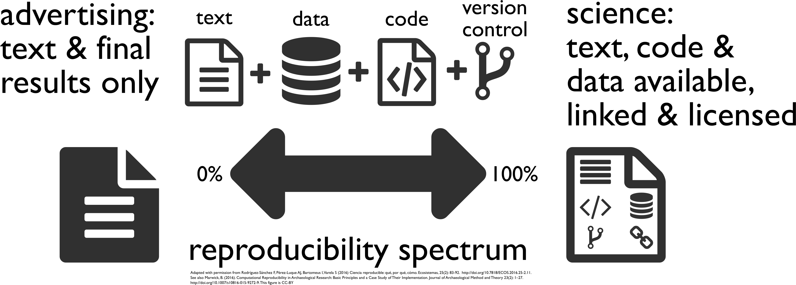 [Buckheit and Donoho 1995, Peng 2011, Rodríguez-Sánchez et al. 2016, Marwick 2016]Image credit: CC BY-SA Comtebenoit, Wikimedia
Tools for open geospatial science
Graduate-level course at NCSU Center for Geospatial Analytics
Special topics course; on-campus and distance education
First semester: Fall 2017
- Basic topics
- Geospatial topics
- Advanced topics
Course Syllabus: Basic Topics
- Introduction to and motivation for open science
- Collaborative writing of scientific papers
- Advanced tools for papers and reports
- Revision control systems and wiki technologies
- How open source communities and development work
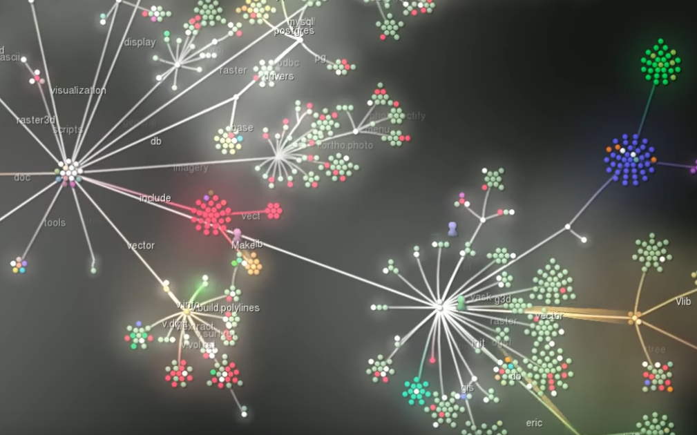
Image source: GRASS GIS 6.4 development visualization from 1999 to 2013
Paper
PDF, HTML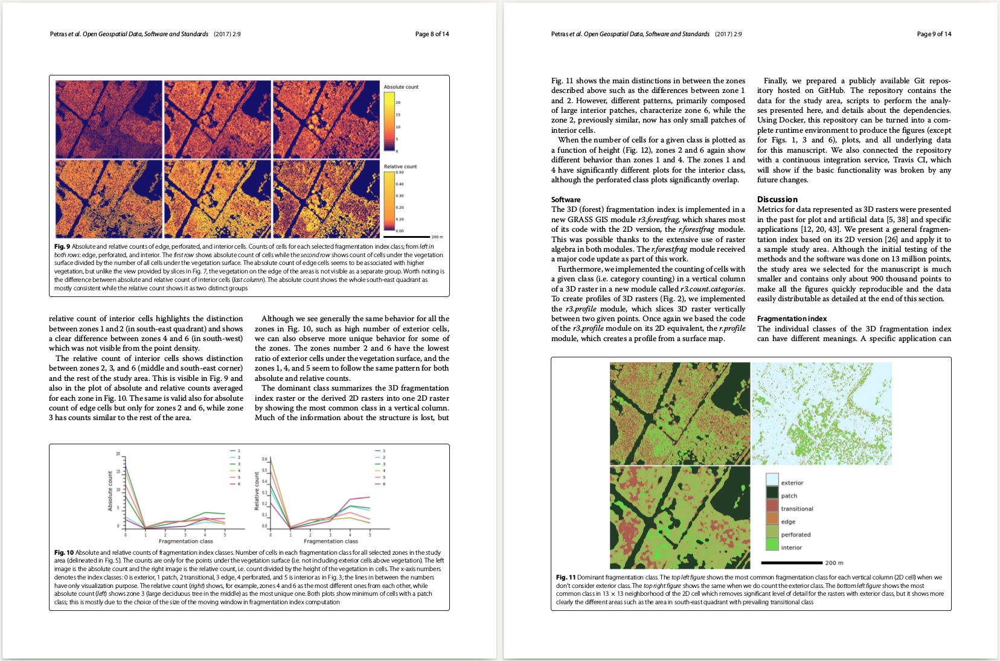
Image source: Petras, V., Newcomb, D. J., & Mitasova, H. (2017). Generalized 3D fragmentation index derived from lidar point clouds. Open Geospatial Data, Software and Standards, 2(1), 9. doi:10.1186/s40965-017-0021-8
Collaborative scientific writing
Overleaf, Authorea
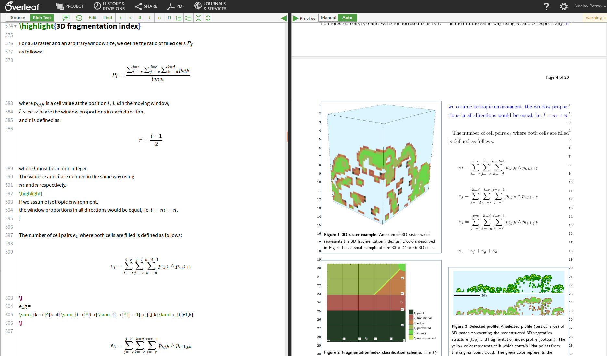Image: Overleaf document for Petras, V., Newcomb, D. J., & Mitasova, H. (2017). Generalized 3D fragmentation index derived from lidar point clouds. Open Geospatial Data, Software and Standards, 2(1), 9. doi:10.1186/s40965-017-0021-8
File versions
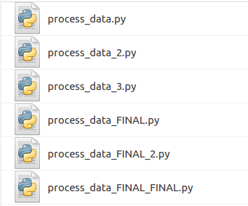Revision control
Git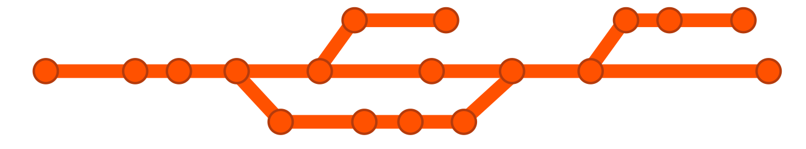
git commit script.py -m "replaced part of the main equation"
There are GUIs as well.
Alternatives: Subversion (
svn), Mercurial (hg), ...
Revision control hosting
- GitHub
- GitHub != Git
- proprietary software
- freemium service
- Self-hosted open alternatives: GitLab, Gogs, Gitea, Gitolite, Trac, ...
- Alternative services: GitLab, Bitbucket, ...
- "software forges"

Course Syllabus: Geospatial Topics
- QGIS, a free and open source geographic system
- Introduction to command line and remote access to computational resources
- Command line and Python tools for geospatial work (GDAL)
- GRASS GIS as software for geospatial research
- Publishing data on web
Geospatial workflows
as visual workflows with visual results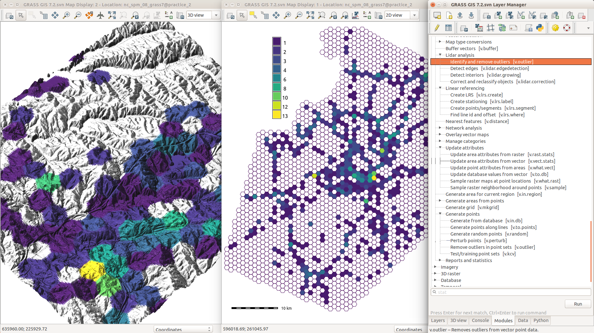
Screenshots
won't cut it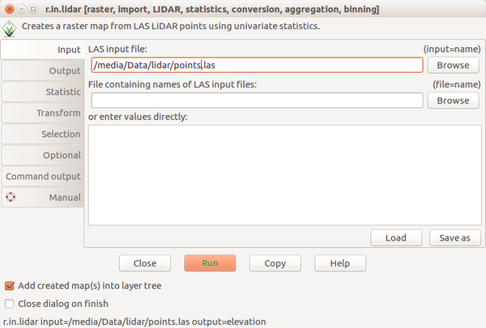 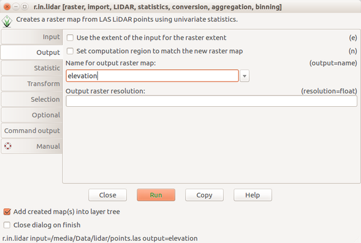 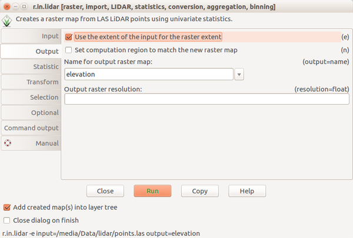
Scripting the process
Bash and GRASS GISr.in.lidar input=points.las output=elevation -e
run_command("r.in.lidar", input="points.las", output="elevation", flags="e")
execGRASS("r.in.lidar", input="points.las", output="elevation", flags="e")
Course Syllabus: Advanced Topics
- Combining text, code and results into one document
- Publishing code as part of an open source project
- Reproducible computational environments
- Writing and reproducing an open science paper
Computational notebooks
- interactive document with text, code, and figures
- languages: Python, R, Bash, C, C++, Octave, ...
- Jupyter Notebook, R Markdown (Notebook), Emacs Org-mode, ...
Publishing Code
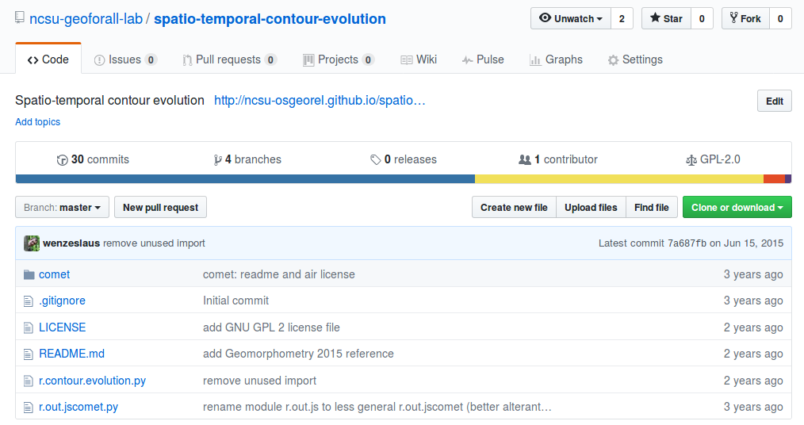Integration into a larger project
- Why?
- Preprocessing, visualization, and user interface (GUI, CLI, API)
- Inputs, outputs, memory management and other common features
- Integration with existing analytical tools
- Long-term maintenance
- Options: R package, Python package, GRASS GIS module, QGIS plugin, ...
- Integration gradient: unofficial extension - integrated extension - code addition
- Choose the project wisely [Schweik and English, 2012]

[Schweik and English, 2012] Schweik, C. M., and English, R. C. 2012. Internet Success: A Study of Open Source Software Commons. works.bepress.com/charles_schweik/29
FUTURES model: An example of integration
- urban-rural landscape patterns simulation
- computational research
- implemented as a set of GRASS GIS addon modules

Meentemeyer, R. K., Tang, W., Dorning, M. A., Vogler, J. B., Cunniffe, N. J., & Shoemaker, D. A. (2013). FUTURES: multilevel simulations of emerging urban–rural landscape structure using a stochastic patch-growing algorithm. Annals of the Association of American Geographers, 103(4), 785-807.
Petrasova, A., Petras, V., Van Berkel, D., Harmon, B. A., Mitasova, H., & Meentemeyer, R. K. (2016). Open source approach to urban growth simulation. Int Arch Photogramm Remote Sens Spat Inf Sci, 41, B7.
FUTURES model: Source code
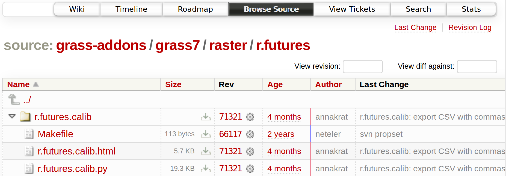 trac.osgeo.org/grass/browser/grass-addons/grass7/raster/r.futuresFUTURES model: Source code history
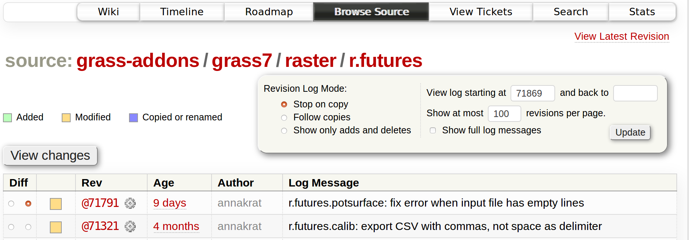 trac.osgeo.org/grass/log/grass-addons/grass7/raster/r.futuresFUTURES model: Documentation
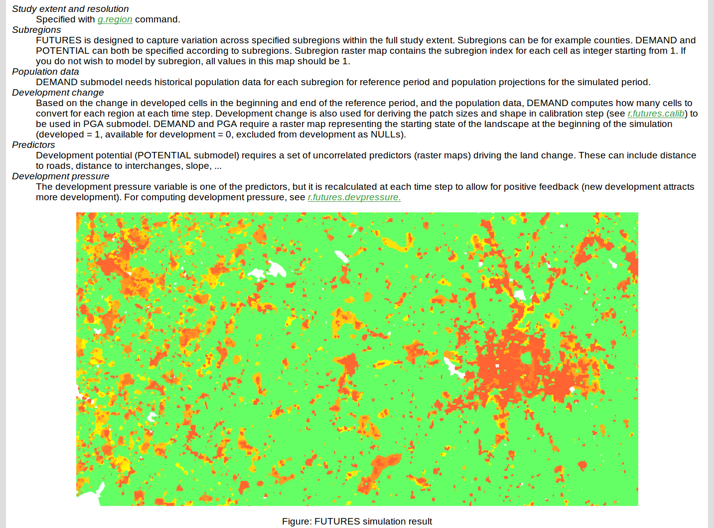 grass.osgeo.org/grass7/manuals/addons/r.futuresFUTURES model: Graphical user interface
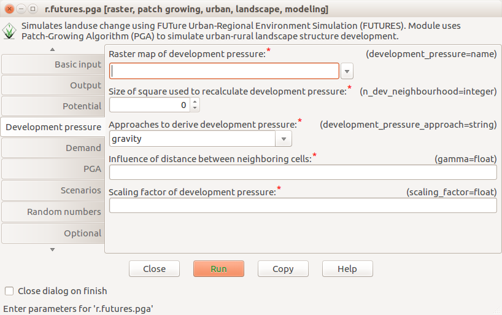Environment to run the code
- dependencies
- environmental settings
- file structure
- solutions: Docker, Vagrant, virtual machines, ...
# Dockerfile
FROM ubuntu:16.04
RUN apt-get update
RUN apt-get install -y \
g++ \
python \
python-numpy \
netcdf-bin \
sqlite3 \
...
WORKDIR /data

Image credit: Wikimedia Commons - Docker (container engine) logo
Research publication
| Text | background, methods, results, discussion | PDF, HTML, * |
| Data | collected data and computational results | open formats, ** |
| Reusable code | generally and reusably implemented methods | Python, R, C |
| Specific code | scripts to generate results | Bash, Python, R, ** |
| Environment | details about all dependencies and the code | Docker, Vagrant |
| Versions | repository with current and previous versions | Git, Mercurial |
* Source format being e.g. LaTeX or Markdown
** Potentially included in computational notebooks such as Jupyter Notebook
Some practical skills and applications
- Publishing a script with the next paper
- Managing code using Git and communicating through GitHub
- Collaborating on scientific text using Overleaf
- Using Jupyter Notebook for a technical report
- Navigating through contribution procedure of an open source project
Management of the course materials
- Texts: HTML and reStructuredText (plain text)
- Conversions and building: Bash, Python, Pandoc
- Revision control: Git
- Git hosting: GitHub; Web hosting: GitHub (proprietary; freemium; free for publicly available projects)
- Lecture slides: Reveal.js (HTML5)
Petras, V., Petrasova, A., Harmon, B., Meentemeyer, R. K., Mitasova, M. Integrating Free and Open Source Solutions into Geospatial Science Education ISPRS Int. J. Geo-Inf. 2015, 4(2), 942-956; doi:10.3390/ijgi4020942
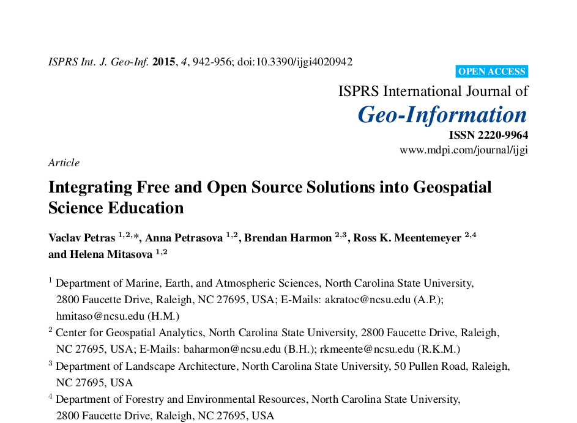Available course material
- Course web site (HTML)
- Lecture slides (if applicable; in Reveal.js)
- Raw (plain text) weekly instructions in reStructuredText (on GitHub)
- Assignment for each week
- Recorded short videos from the class
- Flyer and other promotional material
github.com/ncsu-geoforall-lab/uav-lidar-analytics-course
github.com/ncsu-geoforall-lab/geospatial-modeling-course
Resources
Tools for open geospatial science
- North Carolina State University
- fall 2017, on-campus and distance
- goo.gl/g8pFiE
NCSU GeoForAll Lab
- talks, courses and workshops
- research
- software development
- geospatial.ncsu.edu/osgeorel

Additional resources
General references:- Watson, M. (2015). When will ‘open science’ become simply ‘science’?. Genome biology, 16(1), 101. doi:10.1186/s13059-015-0669-2
- Morin, A et al. “Shining light into black boxes”. In: Science 336.6078 (2012), pp. 159–160. doi:10.1126/science.1218263
- Ince, Darrel C., Leslie Hatton, and John Graham-Cumming. “The case for open computer programs”. In: Nature 482.7386 (2012), pp. 485–488. doi:10.1038/nature10836
- Piwowar, Heather A., Roger S. Day, and Douglas B. Fridsma. “Sharing Detailed Research Data Is Associated with Increased Citation Rate”. In: PLOS ONE 2.3 (Mar. 2007). doi:10.1371/journal.pone.0000308
- Rocchini, Duccio and Markus Neteler. “Let the four freedoms paradigm apply to ecology”. In: Trends in Ecology and Evolution (2012). doi:10.1016/j.tree.2012.03.009
- Lees, Jonathan M. “Open and free: Software and scientific reproducibility”. In: Seismological Research Letters 83.5 (2012), pp. 751–752. doi:10.1007/s10816-015-9272-9
- Marwick, Ben. “Computational reproducibility in archaeological research: basic principles and a case study of their implementation”. In: Journal of Archaeological Method and Theory 24.2 (2017), pp. 424–450. doi:10.1007/s10816-015-9272-9
- Boettiger, C. (2015). An introduction to Docker for reproducible research. ACM SIGOPS Operating Systems Review, 49(1), 71-79. https://doi.org/10.1145/2723872.2723882 (Preprint arxiv.org/pdf/1410.0846)
- Kieran Healy. Plain Person’s Guide to Plain Text Social Science. plain-text.co
- Eva Amsen. 2014. What is open science? F1000Research blog. blog.f1000.com/2014/11/11/what-is-open-science
- The Open Definition (Formal definition of open) opendefinition.org

{kind=link}
{kind=link}
_logo.svg){kind=link}